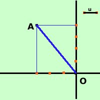

|
Trovare la distanza fra i punti A(-3,4) e B(0,0)  Essendo B(0,0) l'origine degli assi e' meglio chiamarla O(0,0) Scrivo la formula:
A = (-3,4) = ( x1, y1) e che O = (0,0) = ( x2, y2) quindi: x1 = -3 y1 = 4 x2 = 0 y2 = 0 sostituisco nella formula:
quindi il segmento AB e' lungo 5 unita' del piano come puoi anche vedere (grosso modo) dalla figura |